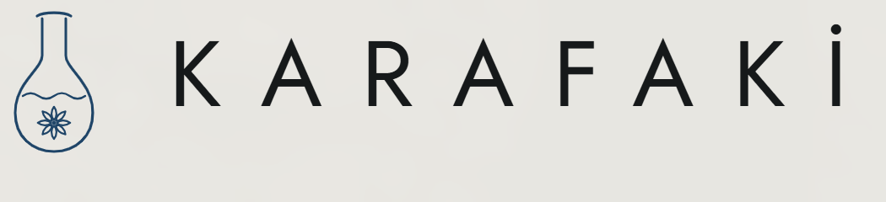
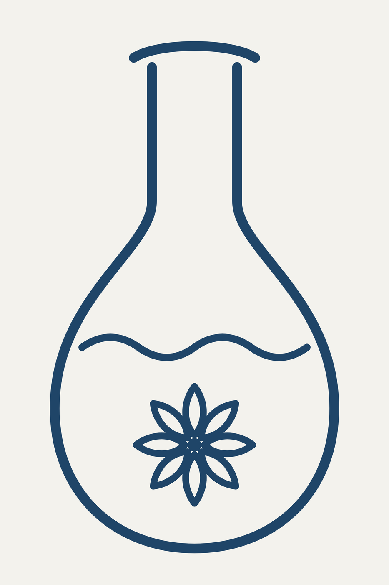
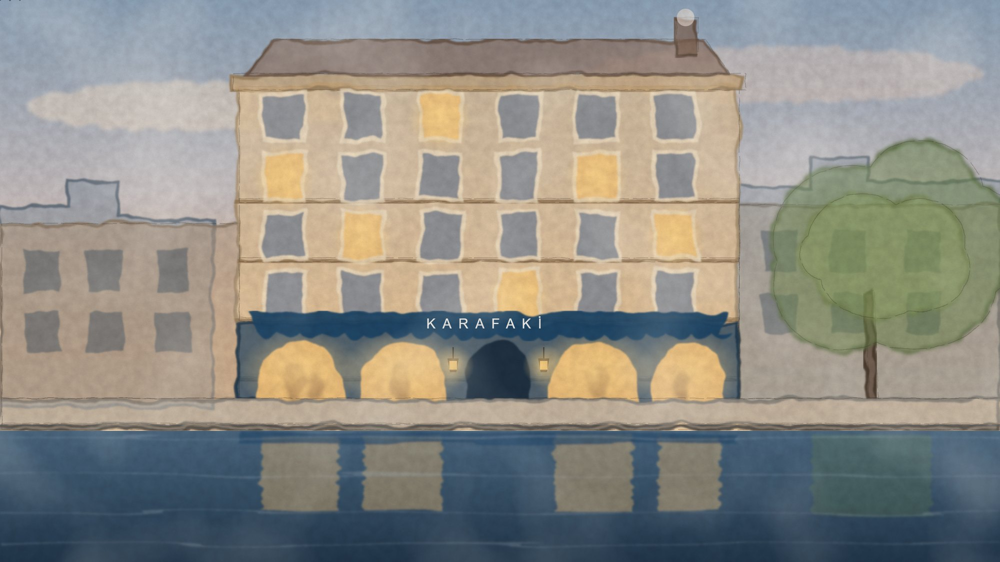
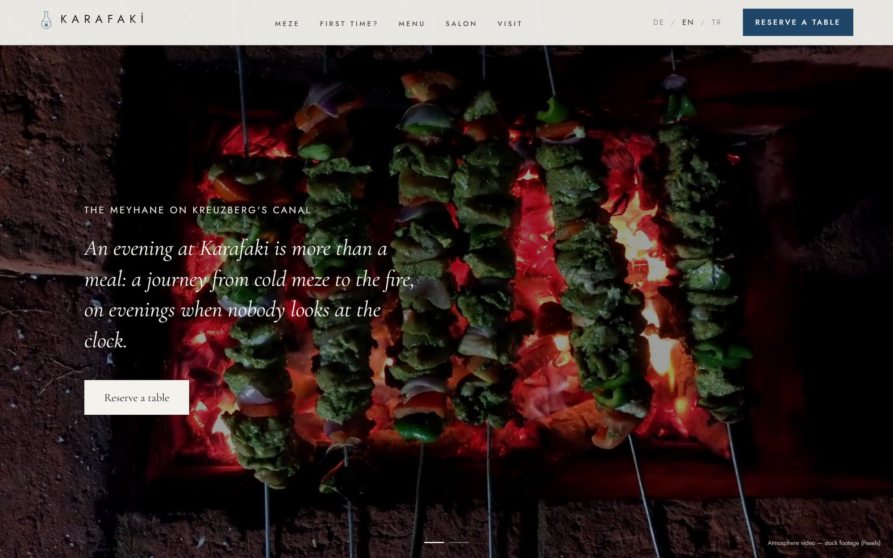
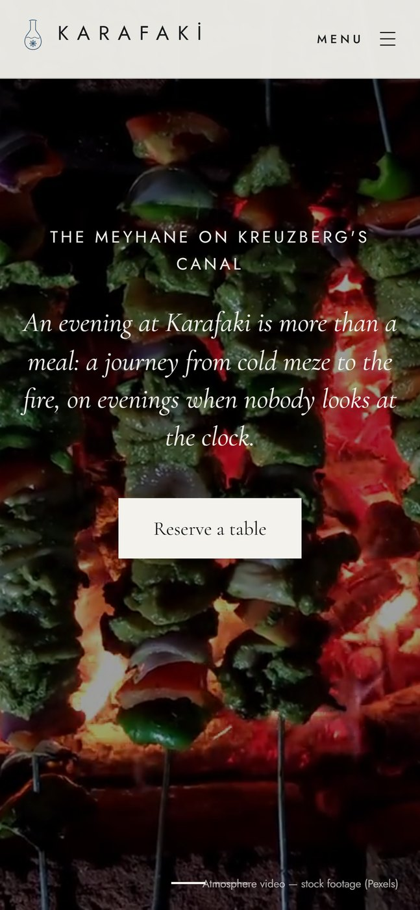

ANT Engineering
Mark for an engineering and design office: the letter A as a pair of compasses, with the arc in the accent yellow. Applied to letterhead, business card, envelope and label. Contact details are blurred.


KARAFAKİ
Identity and website for a fictional meyhane on Berlin's Landwehrkanal. The mark is a single-line carafe holding a star anise, with the wave where water turns rakı milky. The canal façade is an animated watercolour drawn in SVG.










Ink sketches
Meyhane motifs drawn for the KARAFAKİ site: on the page each line is drawn stroke by stroke as it scrolls into view. Every sketch is also available as a vector file.


Maison AUREL
Website concept for a fictional contemporary fine-dining restaurant in Berlin: editorial serif typography, warm ivory and charcoal, generous photography. Three languages, responsive, built with Next.js.